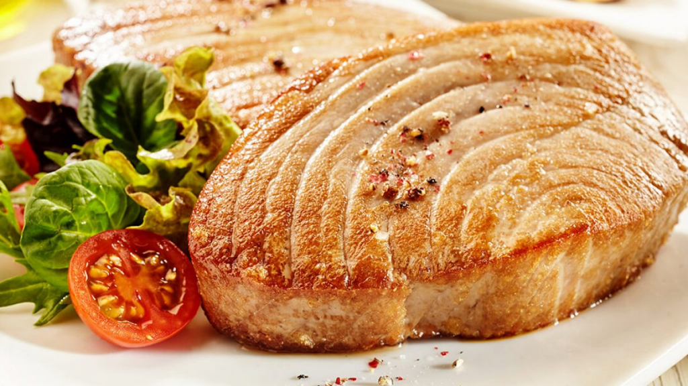

What is Tuna?
Mindanao’s Tuna Cuisine tantalizes with its Grilled Tuna Belly, showcasing the rich flavors of abundant local tuna. Carefully marinated in local herbs and spices, this succulent dish is a mouthwatering experience. Grilled over an open flame, the tuna belly retains its juiciness with a smoky, charred exterior. Each bite offers tender, melt-in-your-mouth flesh bursting with the distinct taste of Mindanao’s pristine waters. Served with aromatic jasmine rice and a tangy soy-based dipping sauce, this grilled tuna belly is a must-try for seafood enthusiasts and connoisseurs.
Ingredients :
Olive oil – Evoo (extra virgin olive oil) all the way for me. It helps keep the tuna from sticking to the grill and helps keep the marinade on the tuna steak.
Honey – A touch of sweet is all you need in this tuna steak recipe.
Minced garlic – Mince your own garlic or use minced garlic from a jar.
Cilantro – Use freshly chopped cilantro, it tastes so good and works better than dried.
Parsley – Fresh parsley is great in this recipe, just chop finely and add to the bag with the rest of the marinade.
Salt and coarsely cracked black pepper – Just a little salt and pepper is all you need in this tuna steak seasoning.
Cumin – Any brand of cumin will work in this recipe for grilled tuna.
Smoked paprika – Smoked paprika adds a lovely flavor to this marinade. But if you only have regular paprika that’s okay too.
Lemon juice – You’ll need the juice from about half a lemon. I swear by fresh-squeezed lemon juice because it just takes much more tart and lemony. But you can use bottled in a pinch.
Instructions :
First step is the easiest: Combine all of the marinade ingredients (yep, all of them!) and whisk vigorously. (photo 1)
Next, place the tuna steaks in a gallon Ziploc bag, then, pour in the marinade toss to coat the tuna steaks, and press out the excess air and seal. (Alternately, you can put the tuna steaks in a bowl, add the marinade, toss, cover and let marinade in the bowl.) (photo 2)
Transfer the tuna steak marinade to the fridge and chill for 30 minutes.
Take the tuna steak out of the fridge and put it on the grill, cooking for 6-8 minutes on each side, or till the tuna is easily flaked with a fork and the center of the tuna steak is just barely pink. (The internal temperature of the tuna steak should read 90-95 degrees when done.)